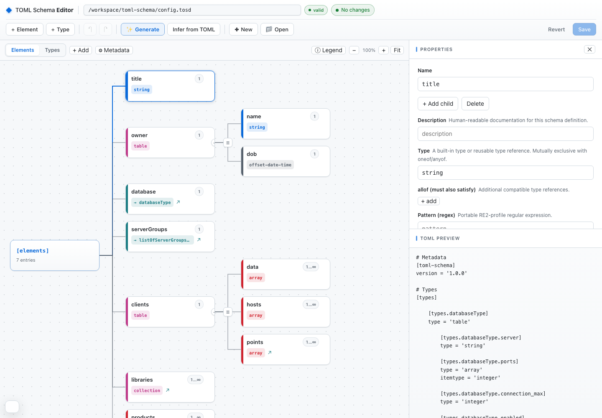
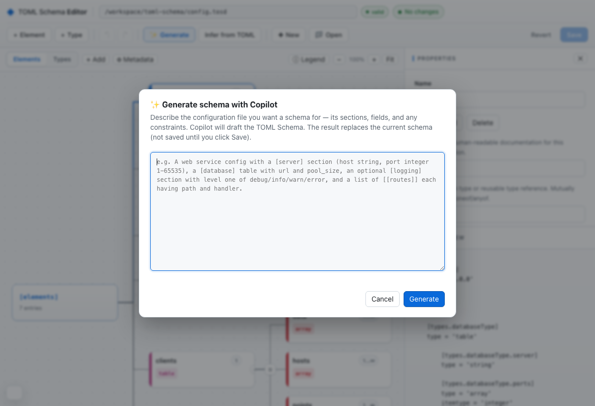

Open and map
Load an existing .tosd document and move between elements and reusable types without losing its hierarchy.
The TOML Schema Editor turns .tosd documents into a visual
map inside the GitHub Copilot App—while the canonical TOML stays visible,
inspectable, and yours.

Start from an existing definition, a representative TOML file, or a plain-language description.
Load an existing .tosd document and move between elements and reusable types without losing its hierarchy.
Use a representative TOML document to infer an editable starting structure, then refine the constraints that matter.
Describe sections, fields, and rules in natural language. Copilot drafts the schema for review before anything is saved.
Inspect generated TOML and structural issues together. Save only after the editor's model validation passes.

Copilot generation is deliberately reviewable: the draft replaces the in-memory model, the live preview exposes the resulting TOML, and the file is not written until you choose Save.
The editor and the canonical tosd CLI work on the same
.tosd source. Save the schema, then run the check locally
or in CI without converting formats.
$HOME/.local/bin.
.tosd file.
tosd discover it from [toml-schema].location.
curl --proto '=https' --tlsv1.2 -sSfL \
https://github.com/brunoborges/toml-schema/releases/download/rust-v1.0.0-rc.2/install-tosd.sh |
bash -s -- --version 1.0.0-rc.2tosd validate config.tosd config.tomltosd validate config.tomlWindows users install from the release archive. Checksums, destination overrides, extraction, and all supported commands are covered in the Rust reference implementation guide.
The editor is a project extension in this repository and loads automatically when the project is opened in the GitHub Copilot App.
brunoborges/toml-schema in the GitHub Copilot App.config.tosd, toml-schema.tosd, or another .tosd file.config.tosd in the TOML Schema Editor.”
The third-party TOML Schema LSP and VS Code extension
provides real-time validation using local .tosd schemas.